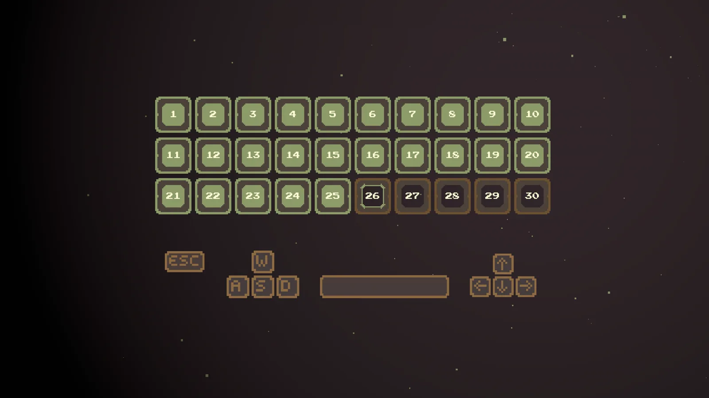

Conclusus
- Engine
- Unity 2021, WebGL
- Language
- C#
- Role
- Solo
- Year
- 2022
- Base
- HeavyLight
- Music
- George Tantchev
A precision platformer built on the HeavyLight base. Thirty levels, a symbol to carry to a door, pins that launch you, a shadow you plant and teleport back to, and silhouettes that switch between safe and deadly every 1.2 seconds.
Playable here. Also on itch.io.
The brief
HeavyLight ran on one mechanic, which meant its level design had to carry the whole game. For Conclusus I chose the opposite: several mechanics that players already understand, so each level could combine them instead of inventing something new. That took weight off the level design and let me spend it where I am strongest, on the feel of the controls and on the look of the game.
It is a game of technical difficulty rather than puzzles. The levels are short, one hit kills, and the retry is instant, so the challenge is execution.
The controls
The character controller is the one from HeavyLight, carried over untouched. Coyote time and a jump buffer of 0.15 seconds each, a jump that reaches its apex in 0.4 seconds with 1.75 times gravity on the way up, and a deceleration high enough that you stop the frame you release the key. Move with A and D or the arrows, jump with Space, W or Up, and use the shadow with S or Down.
Any hazard kills in one touch. You respawn at the start of the level in about a second, with the shadow, the platforms and the symbol reset with you.
Key and door
Every level ends at a door with a spinning symbol somewhere in the level. Touch the symbol and it glides to the door over one second, and the door opens. In ten levels the symbol is split into three pieces that must be collected in order, each playing its own note.
A symbol in three pieces. Each one is collected in order, and the door opens on the third.
Twenty levels add a second condition: every platform in the level has to be lit at the same moment. Stepping on a platform lights a shard on it, and the light fades over about five seconds. The route through the level becomes a race to reach the last platform before the first goes dark. When the last one lights with the symbol in place, a chime and a burst of particles tell you the door is open.
Lighting every platform before the first one goes dark. The door opens on the last.
Pins
Pins are the first mechanic the game introduces. There are 88 of them. Touching one snaps you to it, cancels your momentum and fires you in the direction it points. For the next second your fall speed is held close to zero, so you hang in the air with time to steer toward the next pin or a platform. The pin spins, plays its animation and springs as you leave.
Chains of pins are how the game does its flying sections. The float window after each launch is what keeps them readable at speed.
A chain of pins to the door. Each launch holds the fall for a second, long enough to line up the next one.
The shadow
The main mechanic. Press S while standing on the ground and a grass green copy of you stays where you were. Press S again from anywhere in the level and you teleport back into it, keeping your speed and facing. Only one shadow exists at a time, and walking back into it on foot also uses it up. Placing plays a grass footstep and teleporting plays another, with a particle burst on arrival.
The shadow is unlocked by a pickup in level 7, with a short tutorial that fades in. From then on the levels are built around it: cross a gap of silhouettes once by pin, plant the shadow, collect the symbol, and jump straight back.
Plant the shadow, take the pins up to the symbol, then teleport straight back to it and walk to the door.
The silhouettes
The last mechanic keeps the theme of other selves. The late levels hold figures shaped like your shadow. All of them switch state together every 1.2 seconds: green means safe, and touching one teleports you into it and removes it; silver means deadly, and touching one kills you. The switch is fixed and synchronised, so a level can be read, timed and learned.
There are 40 silhouettes in the game, first appearing in level 16 and filling levels 25 to 30, where the timing of the switch becomes the whole level.
A silhouette on every platform. Green ones teleport you in, silver ones kill, and they all switch together every 1.2 seconds.
Thirty levels
Thirty levels in three chapters, each chapter closing with a heavier rain. The first levels teach walking, jumping and pins. Level 7 gives you the shadow, level 16 gives you a double jump and the first silhouettes, and the last six levels combine everything. Progress is a single saved number, and a level select with thirty buttons opens them in order.
There is no optional content. The journal, secret levels and collectibles from HeavyLight were cut on purpose, and the time went into mechanics and polish instead.

The level select. Thirty buttons that open in order. Here 26 is next and the last four are still locked.
The polish
Most of the time saved by reusing the base went into how the game looks and feels. The whole game is drawn from one palette file. Every platform picks one of five grass sprites or four floor sprites when it appears, so no two levels tile the same way. The symbol wobbles and reverses on random timings. Spike balls spin and bob, each at its own height. Rain falls through every level.
Finishing a level is an event. Your input locks, the bloom ramps from 1.5 to 50 in half a second, the rain doubles, and the level fades out over three seconds before the next fades in. At the end of a chapter the rain pours at twenty times its speed. The soundtrack is one track, Waves, by George Tantchev.
Under the hood
Unity 2021.3 with the Universal Render Pipeline, a Bloom volume, Cinemachine and the new Input System, built for WebGL. All thirty levels are objects in one scene that get switched on and off rather than loaded, and every mechanic implements its own Reset, so a restart puts the shadow, the platforms, the symbol and every silhouette back in one call. Sprites are 32 pixels and sort by height. The build checks which site it runs on, and a copy uploaded elsewhere sends you to a gif and quits.
Built on HeavyLight
I wrote HeavyLight as a base rather than a one off, and Conclusus was the proof. The controller, the level switching, the reset convention and the door logic came over as they were, and the pins, the shadow, the silhouettes and the lit platforms went on top without touching them. Thirty levels and four new mechanics took less time than the original twenty.
What it taught me
Conclusus started from a base and a deadline rather than from a locked concept, and the shadow, its best idea, was found during production. Since then I prototype the core mechanic first and test it before building levels around it. The rest of the plan held: several mechanics instead of one, familiar rules instead of a novel one, and the saved time spent on colour, sound and the feel of every jump.